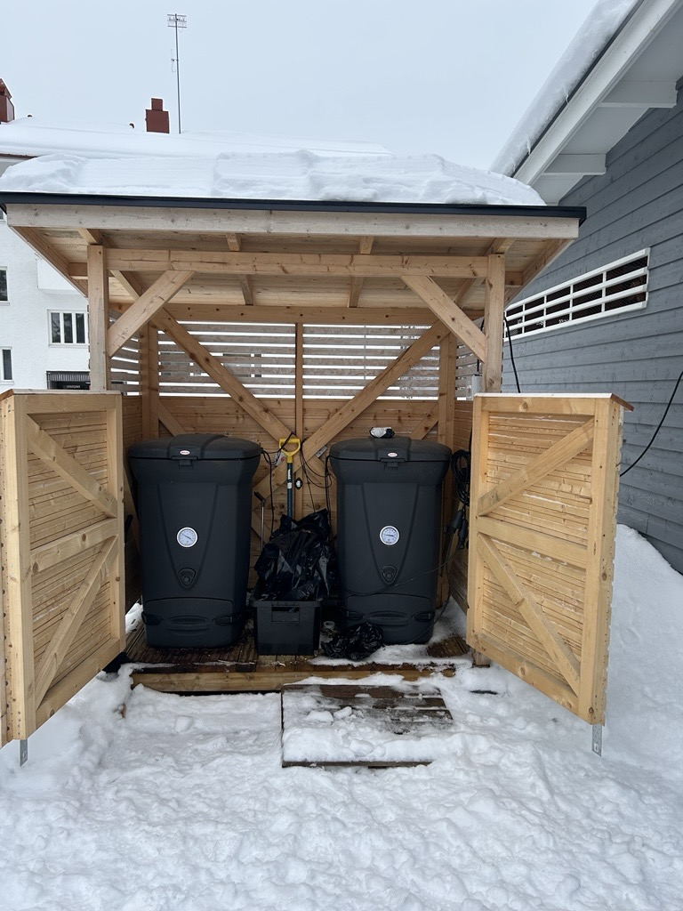

Project R54D25S
Campus Composting Monitoring
A website that visualizes campus composting data, combines it with open environmental data, and explains the main patterns behind the process.
Project R54D25S
A website that visualizes campus composting data, combines it with open environmental data, and explains the main patterns behind the process.

Sensors inside the compost bins measure temperature and humidity. The data is collected over time and sent to the system.
This allows us to track compost activity and observe how conditions change during the process.
Monitoring helps ensure the compost process is working properly and improves understanding of compost development.
This project studies compost using temperature and humidity data. It helps track changes and understand compost behavior.
The dashboard displays outdoor, shelter, and compost layer data for easy comparison.
How composting works and how the material moves through its main stages.
Composting happens when microorganisms break down organic material. As they work, temperature and moisture change, which helps show whether the compost is active, cooling down, or becoming more stable.
The process starts at moderate temperatures while microorganisms begin decomposing the easiest organic material.
Temperature rises and decomposition becomes more intense, showing the highest biological activity inside the compost.
After the peak, the pile gradually loses heat as the most easily degradable material becomes less available.
The compost stabilizes and becomes more uniform, moving closer to a mature state that is safer to use.